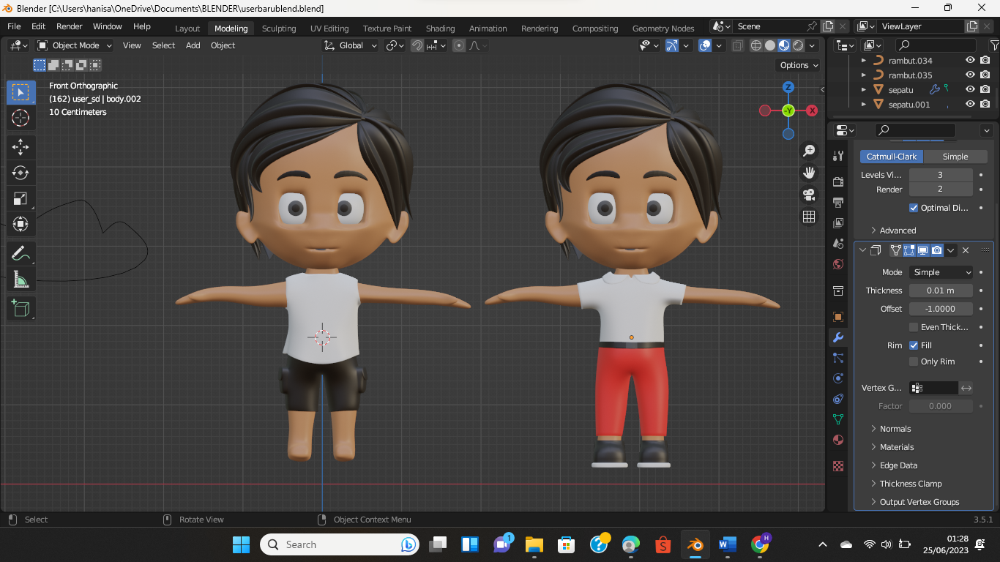
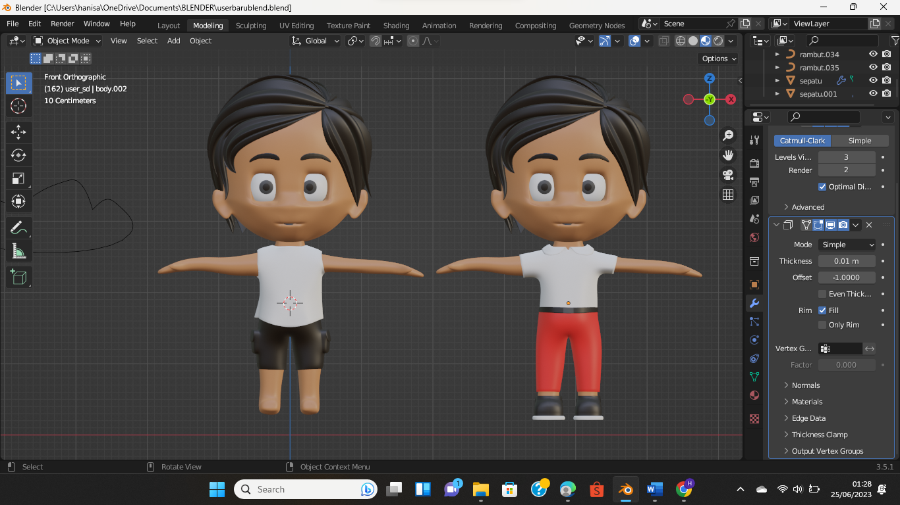

Lakukan Riset & Konseptualisasi Game yang Ingin di Buat
Langkah pertama yang penting adalah merenungkan dan menentukan jenis game yang ingin dibuat. Kemudian, melakukan riset untuk memahami ketrampilan yang diperlukan dalam pembuatan game tersebut. Setelah itu, bisa memperhatikan fitur-fitur apa yang ingin dibangun dalam game tersebut. Jika tertarik dengan game 2D Role-Playing, sangat dianjurkan untuk belajar menggunakan Unity, Blender, dan C#.

Buatlah Sebuah Dokumen Desain
Setelah membuat konseptualisasi tampilan yang diinginkan, langkah selanjutnya adalah membuat dokumen desain game. Dokumen Desain berfungsi sebagai panduan atau garis besar singkat yang mencakup konsep tampilan dan langkah-langkah yang perlu dilakukan dalam pembuatan game. Pertimbangkan ketrampilan yang dimiliki, bahasa pemrograman yang akan digunakan, tampilan dan fitur game, serta kemungkinan penambahan update di masa depan.
Menentukan Software
Menentukan software yang tepat sangat penting untuk membuat game yang berfungsi dengan baik. Beberapa game Android mungkin hanya membutuhkan editor dan compiler sederhana, sedangkan game lain mungkin membutuhkan software spesifik untuk membuat desain dan gambar 3D. Selain itu, komputer dengan prosesor berkualitas dan RAM yang cukup besar juga diperlukan untuk menjalankan software yang dibutuhkan dalam pembuatan game agar kinerja yang baik dan lancar saat bekerja pada pengembangan game.
Memulai Pemrograman
Setelah mengunduh software yang diperlukan, sekarang saatnya untuk memulai pemrograman! Meskipun beberapa game kompleks membutuhkan aplikasi pembuat game, ada juga game seluler yang dapat dibuat tanpa aplikasi tersebut. Cukup tentukan bahasa pemrograman yang akan digunakan. Jika ingin membuat game dengan banyak variasi, seperti game RPG, disarankan untuk melihat tutorial Unity Video Game. Selain itu, dapat membuat game menggunakan aplikasi pembuat game yang lebih sederhana, seperti PhoneGap. Dengan PhoneGap, dapat membuat aplikasi game seluler tanpa menghabiskan banyak waktu. Dengan menggunakan JavaScript, HTML, dan CSS, dapat membuat game sederhana.
Tes Game & Mulailah Memasarkannya
Setelah menyelesaikan game Anda, langkah selanjutnya adalah melakukan tes/pengujian untuk mengidentifikasi dan mengatasi bug yang mungkin ada dan memulai pemasarannya. Contoh cara pemasarannya dengan membuat website agar orang dapat membeli dan mengunduh game atau jika membuat game seluler, dapat mendaftarkan gamenya pada Apple App Store atau Google Play Store.
 
